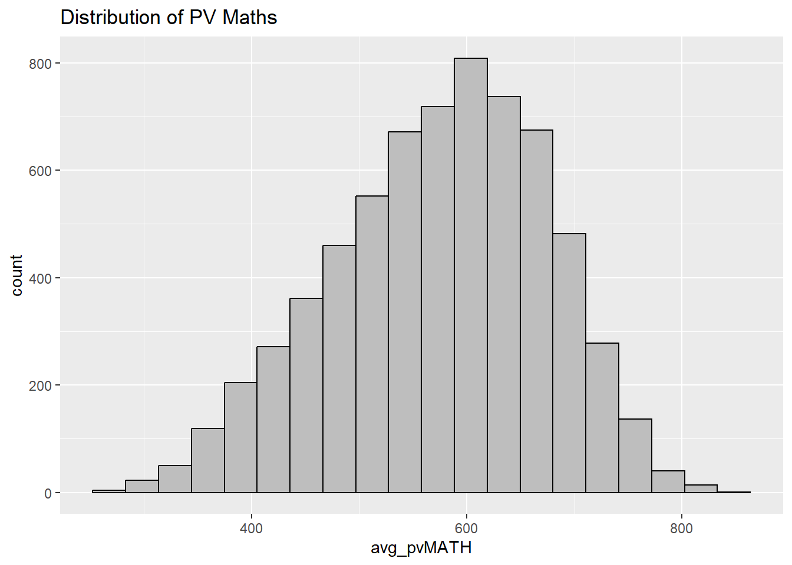
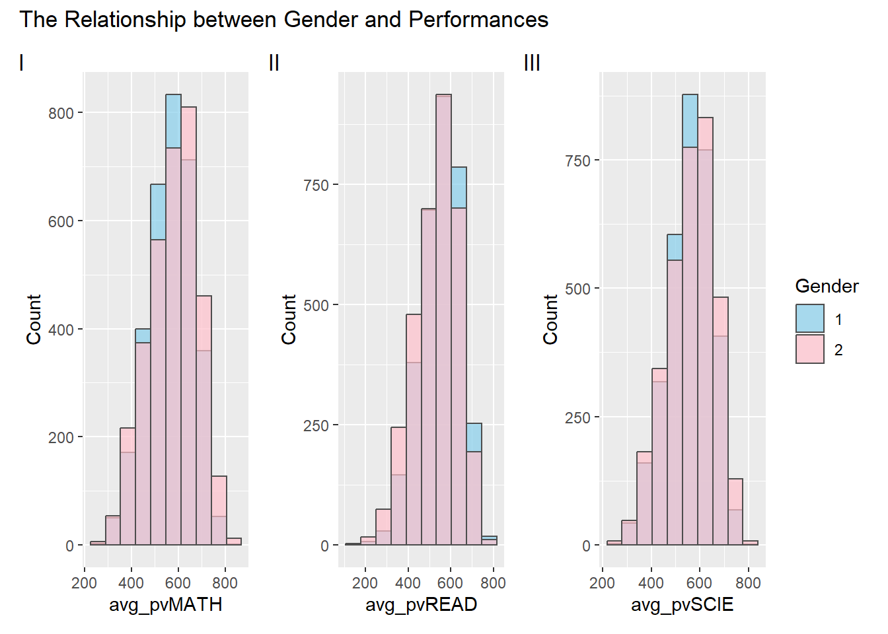
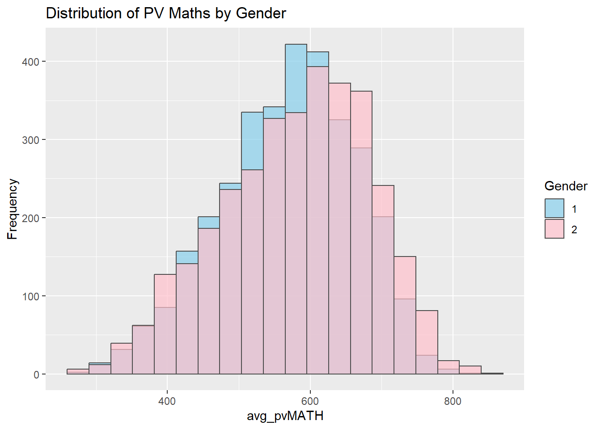
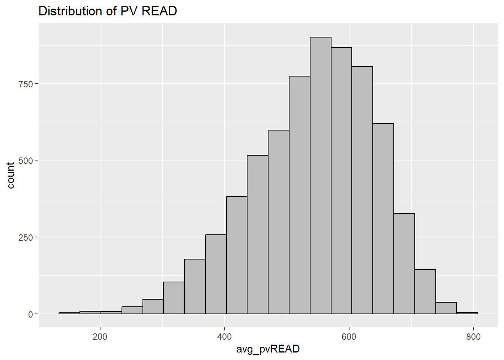
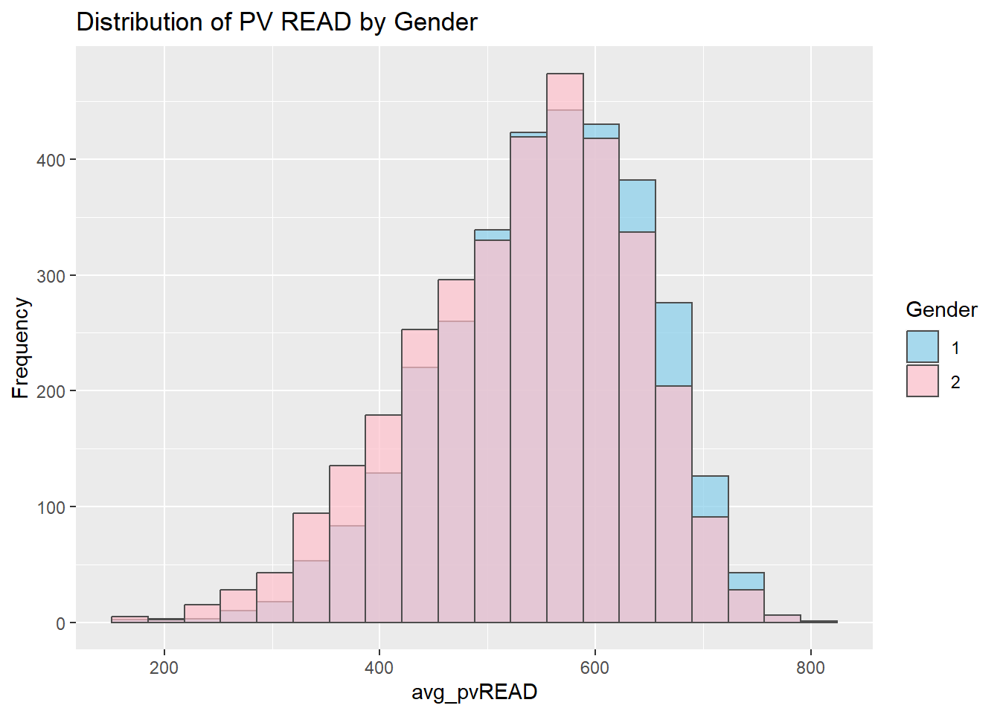
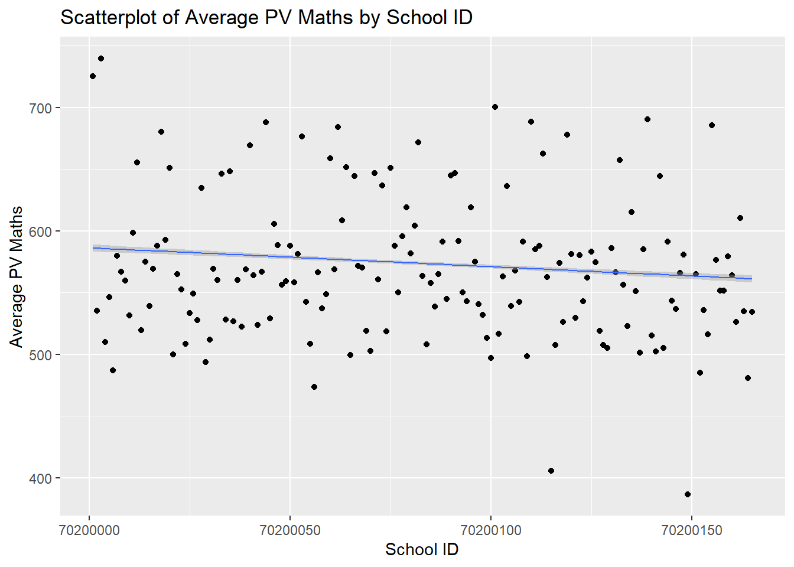
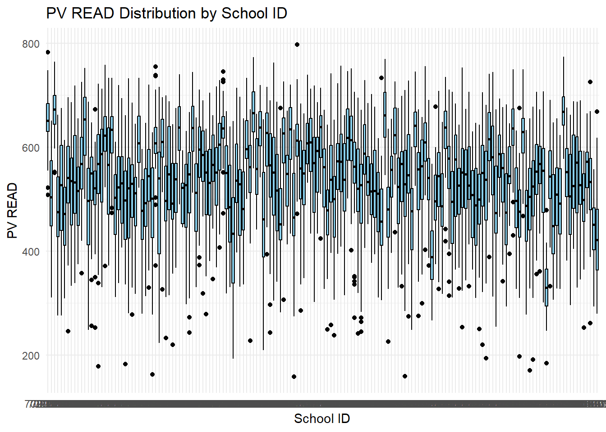
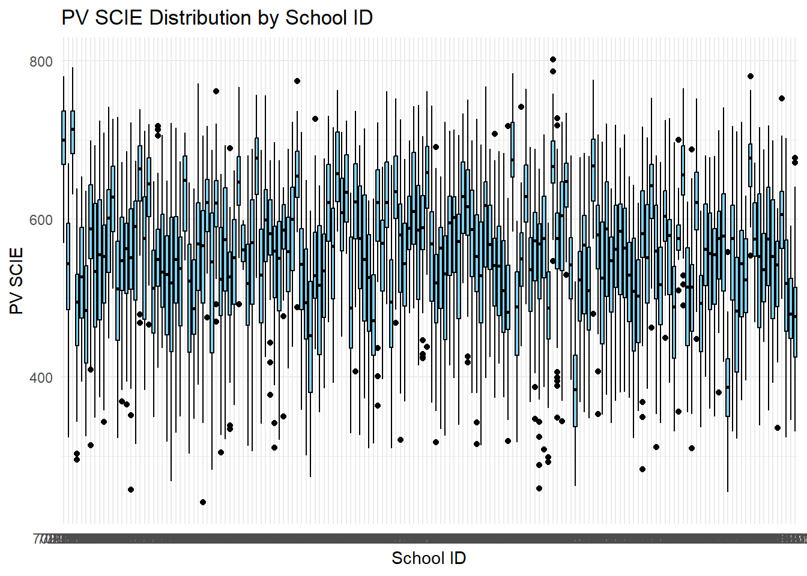

pacman::p_load(tidyverse, haven, ggplot2)Take-home Exercise 1 : Exploring Academic Performance Patterns: An In-Depth Analysis of Singaporean Students in PISA 2022.
Project Overview
This project aims to provide an in-depth study of the performance of Singapore students in mathematics, reading and science through appropriate exploratory data analysis (EDA) methods and ggplot2 functions.
Through analysis of the 2022 Programme for International Student Assessment (PISA) data, we will explore the distribution of these performances and try to understand possible relationships between these performances and schools, student gender, and socioeconomic status.
The project aims to provide insight into possible disparities and trends in Singapore’s education system, leading to more in-depth studies of these disparities or references for future policy decisions.
Data preparation
Loading R packages
In this take-home exercise, some R packages will be used. They are:
The code chunk used is as follows:
Importing PISA data
Download the Student Questionnaire data file from the PISA 2022 database and import it.
The code chunk below uses read_sas() of haven to import PISA data into R environment.
# eval: false
stu_qqq <- read_sas("data/cy08msp_stu_qqq.sas7bdat")And filtering out Singapore students in the data.
# eval: false
stu_qqq_SG <- stu_qqq %>%
filter(CNT =="SGP")# eval: false
write_rds(stu_qqq_SG,
"data/stu_qqq_SG.rds")stu_qqq_SG <-
read_rds("data/stu_qqq_SG.rds")Then filtering out student performance data related to math, reading, and science.
# eval: false
Related_math_read_scie_data <- stu_qqq_SG %>%
select(contains(c("ID","ST004D01T","math", "read", "scie")))# eval: false
write_rds(Related_math_read_scie_data,
"data/Related_math_read_scie_data.rds")Related_math_read_scie_data <-
read_rds("data/Related_math_read_scie_data.rds")Plotting a simple bar chart
We first looked at the data in general to see the overall distribution of math, reading, and science average plausible values. Through visualization methods such as histograms and box graphs, we have clarified the range of students’ performance in various subjects.
Maths Distribution
Related_math_read_scie_data <- Related_math_read_scie_data %>%
mutate(avg_pvMATH = rowMeans(select(., ends_with("Math")), na.rm = TRUE))ggplot(data=Related_math_read_scie_data, aes(x = avg_pvMATH)) +
geom_histogram(bins=20,
boundary = 100,
color="black",
fill="grey") +
ggtitle("Distribution of PV Maths")
Maths Distribution by Gender
In general, gender coding conventions, 1 means male and 2 means female.
ggplot(data = Related_math_read_scie_data, aes(x = avg_pvMATH, fill = factor(ST004D01T))) +
geom_histogram(bins = 20, color = "grey30", position = "identity", alpha = 0.7) +
ggtitle("Distribution of PV Maths by Gender") +
labs(x = "avg_pvMATH", y = "Frequency", fill = "Gender") +
scale_fill_manual(values = c("skyblue", "pink"))
Maths Distribution by School ID
ggplot(data = Related_math_read_scie_data, aes(x = factor(CNTSCHID), y = avg_pvMATH)) +
geom_boxplot(fill = "skyblue", color = "black") +
ggtitle("PV Maths Distribution by School ID") +
labs(x = "School ID", y = "PV Maths") +
theme_minimal()
Insights from Visualisations by Maths Distribution
Based on an analysis of mathematical average Plausible Values, it ranges from 250 to 850. Through the visual chart, we observe that the distribution is mainly in the range of 500 to 700, indicating that the students’ math performance is relatively concentrated.
In terms of gender influence, it is found that before 620, the average Plausible Values of boys are generally higher, and after 620, the average Plausible Values of girls begin to dominate. This may suggest some variation in the ability levels of boys and girls in mathematics.
In addition, in terms of the influence of each school on the average Plausible Values, it is difficult to distinguish the significant differences between different schools in general through the box chart observation. However, we can roughly observe that some schools have higher average Plausible Values, while others have relatively lower ones.
Reading Distribution
Related_math_read_scie_data <- Related_math_read_scie_data %>%
mutate(avg_pvREAD = rowMeans(select(., ends_with("READ")), na.rm = TRUE))ggplot(data=Related_math_read_scie_data, aes(x = avg_pvREAD)) +
geom_histogram(bins=20,
boundary = 100,
color="black",
fill="grey") +
ggtitle("Distribution of PV READ")
Reading Distribution by Gender
In general, gender coding conventions, 1 means male and 2 means female.
ggplot(data = Related_math_read_scie_data, aes(x = avg_pvREAD, fill = factor(ST004D01T))) +
geom_histogram(bins = 20, color = "grey30", position = "identity", alpha = 0.7) +
ggtitle("Distribution of PV READ by Gender") +
labs(x = "avg_pvREAD", y = "Frequency", fill = "Gender") +
scale_fill_manual(values = c("skyblue", "pink"))
Reading Distribution by School ID
ggplot(data = Related_math_read_scie_data, aes(x = factor(CNTSCHID), y = avg_pvREAD)) +
geom_boxplot(fill = "skyblue", color = "black") +
ggtitle("PV READ Distribution by School ID") +
labs(x = "School ID", y = "PV READ") +
theme_minimal()
Insights from Visualisations by Reading Distribution
Based on an analysis of reading average Plausible Values, it ranges from 150 to 800. Through the visual chart, we observe that the distribution is mainly in the range of 450 to 650, which indicates that the students’ reading performance is relatively concentrated.
In terms of gender influence, it is found that before 600, the average Plausible Values of girls are generally higher, and after 600, the average Plausible Values of boys begin to dominate. This change may suggest that in reading, girls perform better in the lower section, while boys perform more prominently in the higher section.
In addition, in terms of the influence of each school on the average Plausible Values, it is difficult to distinguish the significant differences between different schools in general through the box chart observation. However, we can roughly observe that some schools have higher average Plausible Values, while others have relatively lower ones.
Science Distribution
Related_math_read_scie_data <- Related_math_read_scie_data %>%
mutate(avg_pvSCIE = rowMeans(select(., ends_with("SCIE")), na.rm = TRUE))ggplot(data=Related_math_read_scie_data, aes(x = avg_pvSCIE)) +
geom_histogram(bins=20,
boundary = 100,
color="black",
fill="grey") +
ggtitle("Distribution of PV SCIE")Science Distribution by Gender
In general, gender coding conventions, 1 means male and 2 means female.
ggplot(data = Related_math_read_scie_data, aes(x = avg_pvSCIE, fill = factor(ST004D01T))) +
geom_histogram(bins = 20, color = "grey30", position = "identity", alpha = 0.7) +
ggtitle("Distribution of PV SCIE by Gender") +
labs(x = "avg_pvSCIE", y = "Frequency", fill = "Gender") +
scale_fill_manual(values = c("skyblue", "pink"))
Science Distribution by School ID
ggplot(data = Related_math_read_scie_data, aes(x = factor(CNTSCHID), y = avg_pvSCIE)) +
geom_boxplot(fill = "skyblue", color = "black") +
ggtitle("PV SCIE Distribution by School ID") +
labs(x = "School ID", y = "PV SCIE") +
theme_minimal()
Insights from Visualisations by Science Distribution
Based on an analysis of scientific average Plausible Values, it ranges from 200 to 850. Through the visual chart, we observe that the distribution is mainly in the range of 500 to 650, showing that the performance of students in the science field is relatively concentrated.
In terms of gender influence, it is found that before 600, the average Plausible Values of boys are generally higher, and after 600, the average Plausible Values of girls begin to dominate. This could mean that at the higher end of the spectrum, girls do better in science, while at the lower end, boys do relatively well.
In addition, in terms of the influence of each school on the average Plausible Values, it is difficult to distinguish the significant differences between different schools in general through the box chart observation. However, we can roughly observe that some schools have higher average Plausible Values, while others have relatively lower ones.
Conclusion
In terms of gender impact, we found some differences between the sexes across disciplines. In math, boys outperformed at the higher levels, while in reading and science, girls outperformed in some sections. This provides us with a preliminary understanding of gender on academic performance.
Although it is difficult to distinguish significant differences between individual schools, we use the box chart to get a rough idea of the groups of students who are likely to have high scores in certain subjects at some schools. This provides a basis for further in-depth analysis at the school level.
Limitation for Visualisations
Limitation for analysing the relationship between socioeconomic status and performances
We recognize that socioeconomic status is a complex concept that is difficult to accurately define with simple data. Therefore, in the current data set, it is difficult to clearly reveal the relationship between student performance and socioeconomic status. This suggests that more dimensions and indicators are needed in future studies to fully understand students’ socioeconomic status.